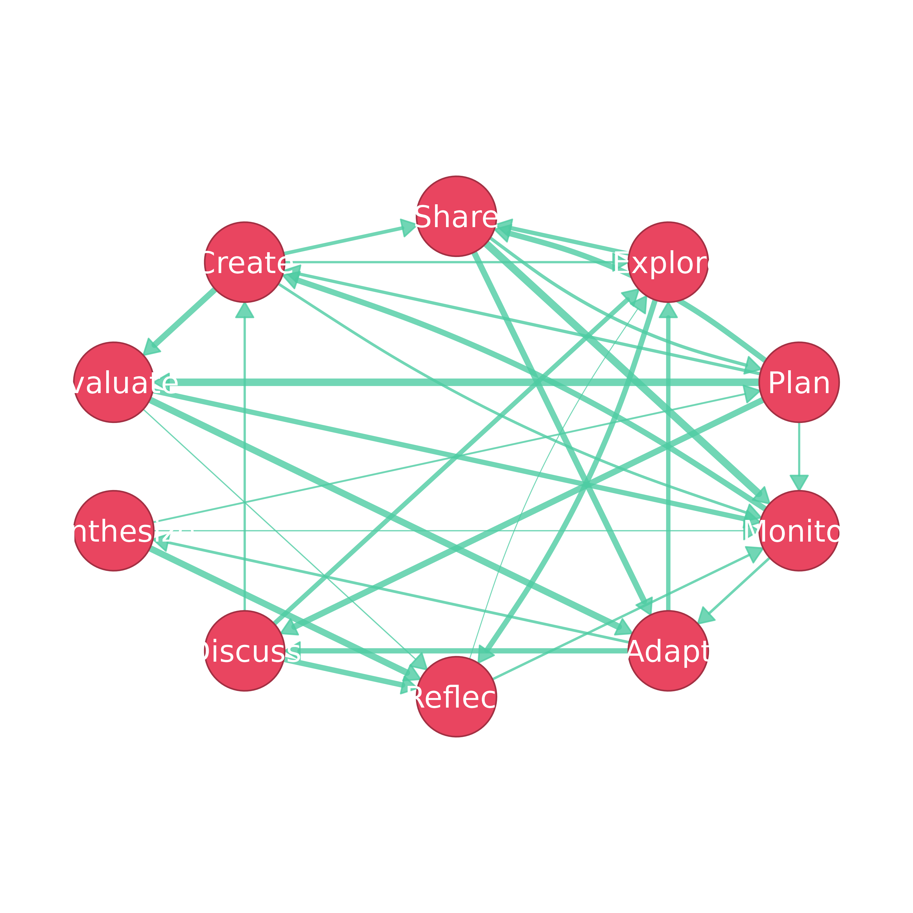

A theme is a CographTheme object that sets the background, node,
edge and label colors of a plot. Themes are stored in a registry and
selected by name through the theme argument of splot,
soplot and sn_theme. The functions
theme_cograph_*() return the built-in themes:
theme_cograph_classic()Blue nodes and gray edges (
"classic").theme_cograph_colorblind()Colors distinguishable under color vision deficiency (
"colorblind").theme_cograph_gray()Black and white for print (
"gray", also"grey").theme_cograph_dark()Dark background for presentations (
"dark").theme_cograph_minimal()Thin borders and few colors (
"minimal").theme_cograph_viridis()The viridis palette (
"viridis").theme_cograph_nature()Earth tones (
"nature").
register_theme() adds a theme under a new name, get_theme()
returns a registered theme, and list_themes() returns the names of
all registered themes.
Usage
register_theme(name, theme)
get_theme(name)
list_themes()
theme_cograph_classic()
theme_cograph_colorblind()
theme_cograph_gray()
theme_cograph_dark()
theme_cograph_minimal()
theme_cograph_viridis()
theme_cograph_nature()Value
The theme_cograph_*() functions return a CographTheme
object. register_theme() returns NULL invisibly.
get_theme() returns the theme, or NULL if no theme has that
name. list_themes() returns a character vector of theme names.
Examples
splot(regulation_net, theme = "dark")
